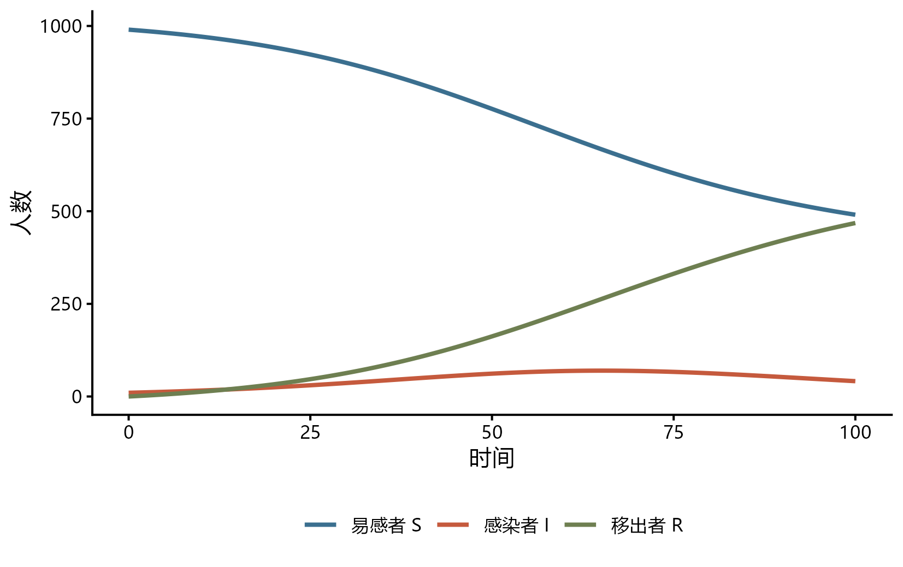
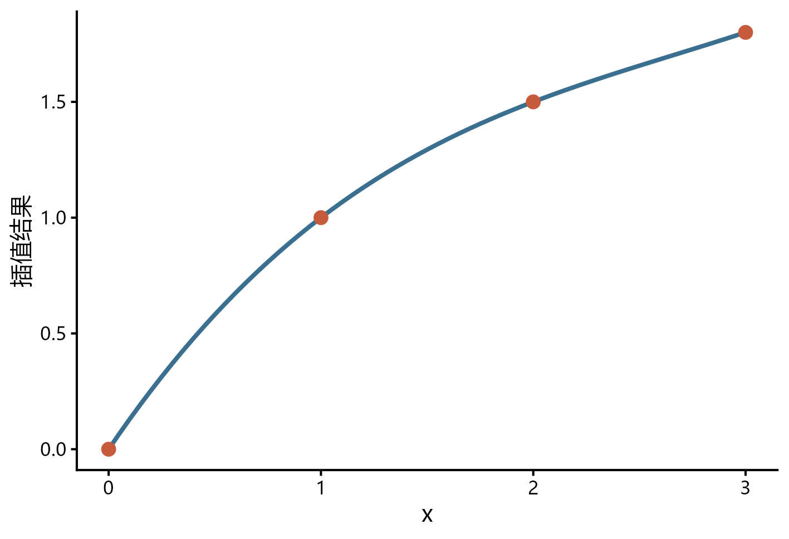

mathmodels：R 数学建模算法工具箱
评价、预测、微分方程、插值与拟合的统一工作流
包的定位与当前版本
mathmodels 是《数学建模：算法与编程实现》的配套 R 包，目标是把数学建模中反复出现的预处理、评价、预测、常微分方程、插值和曲线拟合流程封装为一致的函数接口。它不是用一个函数自动完成整道建模题，而是减少公式到可复现代码之间的重复实现。
截至 2026-07-31，GitHub 主分支的版本为 0.0.11，NAMESPACE 声明 111 个导出函数。官方 README 将功能组织为评价模型、预测模型、微分方程模型、插值与曲线拟合等模块，并提供与 dplyr、purrr 和 ggplot2 衔接的返回对象。该版本仍以 GitHub 为主要发布渠道，安装前应核对仓库的 DESCRIPTION、版本和更新记录，而不是假定 CRAN 已有同名包。
安装与版本核对
install.packages("remotes")
remotes::install_github("zhjx19/mathmodels")
library(mathmodels)
packageVersion("mathmodels")
length(getNamespaceExports("mathmodels"))GitHub 安装会同时解析 forecast、deSolve、minpack.lm、lpSolveAPI、car、lmtest 等依赖。正式竞赛或项目应提前安装并锁定版本，不要在提交前临时更新。包采用 AGPL-3.0 或更高版本许可证，分发修改版或把它纳入服务前应阅读许可证条款。
查看帮助和在线手册：
help(package = "mathmodels")
?mathmodels::topsis
?mathmodels::model_sir
?mathmodels::interp_spline四类算法总览
| 模块 | 代表函数 | 典型问题 | 输出核验重点 |
|---|---|---|---|
| 综合评价 | AHP()、entropy_weight()、critic_weight()、topsis()、fuzzy_eval()、basic_DEA() |
多指标排序、赋权、效率评价 | 指标方向、无量纲化、权重和敏感性 |
| 预测模型 | GM11()、markov_chain()、reg_lm()、ts_sarima()、ts_forecast() |
灰色预测、回归、时间序列 | 训练与验证划分、残差、外推范围 |
| 微分方程 | ode_solver()、model_sir()、model_seir()、model_lv() |
传播过程、人口增长、捕食者与猎物 | 参数单位、初值、守恒关系、数值稳定性 |
| 插值与拟合 | interp_linear()、interp_spline()、interp_hermite()、curve_fit()、growth_fit() |
缺少中间观测、经验曲线拟合 | 插值与外推的区分、边界行为、残差 |
包还包含不平等指标、区域经济指标、耦合协调度、障碍度、时间序列数据结构及绘图辅助函数。函数数量多并不意味着每个模型都适用于当前问题；选择仍应由数据生成机制、目标量和假设决定。
综合评价工作流
指标方向、赋权与 TOPSIS
下面有 4 个候选方案，收益和可靠性为正向指标，成本为负向指标。先用熵权法计算数据驱动权重，再用 TOPSIS 得分排序。
library(dplyr)
library(mathmodels)
方案 <- tibble(
方案 = LETTERS[1:4],
收益 = c(80, 75, 90, 85),
成本 = c(12, 10, 15, 11),
可靠性 = c(0.91, 0.88, 0.94, 0.90)
)
指标方向 <- c("+", "-", "+")
熵权结果 <- entropy_weight(
方案 |> select(-方案),
index = 指标方向
)
评价结果 <- 方案 |>
mutate(
TOPSIS得分 = topsis(
方案 |> select(-方案),
w = 熵权结果$w,
index = 指标方向
)
) |>
arrange(desc(TOPSIS得分))
熵权结果$w
评价结果这段代码的关键不是函数调用，而是 index 的科学含义。成本通常是负向指标，但 pH、温度或剂量等变量可能是区间最优或中间型指标，不能一律写成正向或负向。rescale_middle()、rescale_interval() 可处理对应结构，但阈值必须来自题意或可核验依据。
权重不是“客观真值”
熵权、CRITIC 和 PCA 赋权都从样本分布提取信息。它们反映变异、冲突或主成分结构，不自动等于指标的实质重要性。建议至少比较：
- 等权、主观权重与一种数据驱动权重；
- 不同无量纲化方法；
- 删除单个指标后的排序变化；
- 权重扰动对前几名方案的影响。
若排序对很小的权重变化就反转，应报告不稳定性，而不是只保留某个“最好看”的权重方案。
预测模型工作流
回归预测
reg_lm()、reg_logistic()、reg_poisson() 和 reg_negbin() 提供统一的回归接口，reg_predict() 和 reg_diagnostics() 用于预测与诊断。
library(mathmodels)
fit <- reg_lm(mpg ~ wt + hp + am, data = mtcars)
reg_diagnostics(fit)
new_cars <- data.frame(
wt = c(2.5, 3.0),
hp = c(110, 150),
am = c(1, 0)
)
reg_predict(fit, n_new = 2)
# 对明确指定的新数据，使用封装结果中的底层 lm 对象
predict(
fit$model,
newdata = new_cars,
interval = "prediction"
)reg_predict() 0.0.11 的 n_new 会根据原模型输入生成用于演示的新观测，并返回预测与区间；它没有 newdata 参数。若需要预测业务上明确给出的样本，应像上面一样调用 fit$model 的标准 predict()。教程必须以实际函数签名为准，不能因为包提供了统一接口就猜测它与其他预测函数具有相同参数。
自动逐步选择只能视为候选流程，不能替代理论变量选择、外部验证和过拟合控制。竞赛中也应保留训练/验证划分、误差指标和基线模型，避免用同一数据既选择模型又宣称泛化性能。
时间序列
mathmodels 使用 ts_df 统一时间序列处理。基本顺序是转换、补齐时间索引、变换、检验、拟合、预测和残差诊断。
library(mathmodels)
passengers <- as_ts_df(log(AirPassengers))
fit_ts <- ts_sarima(passengers)
forecast_ts <- ts_forecast(fit_ts, h = 12)
plot_ts_forecast(passengers, forecast_ts)
plot_ts_residuals(fit_ts)缺口填补、对数或 Box-Cox 变换、差分次数以及预测区间都应在正文中说明。时间序列的随机拆分会破坏时间顺序，验证应采用滚动起点、留后验证或与任务一致的回测。
灰色与 Markov 模型
GM11()、GM1N()、DGM21()、verhulst()、markov_chain() 和 GM11_markov() 覆盖常见灰色和状态转移方法。样本少不等于灰色模型必然合适。序列应满足方法需要的可比性和规律性，并检查级比、残差和后验误差；Markov 转移还需说明状态划分是否稳定、齐次假设是否合理。
微分方程模型
SIR 模型
library(mathmodels)
sir_result <- model_sir(
init = c(S = 990, I = 10, R = 0),
params = c(beta = 0.15, gamma = 0.10),
times = seq(0, 100, by = 0.5)
)
plot_compartments(sir_result, compartments = c("S", "I", "R"))
sir_metrics <- epi_metrics(
sir_result,
beta = 0.15,
gamma = 0.10,
N = 1000
)
sir_metrics$R0下图由上述 model_sir() 结果实际计算后绘制，展示同一组参数下三个舱室随时间的变化。它只能说明方程与参数共同决定的动态轨迹，不能当作现实疫情预测。图件生成脚本保存在 examples/generate-mathmodels-figures.R，便于核对包版本和输入。

SIR 示例展示的是给定参数下的数值解，不是对真实流行病的自动估计。beta 和 gamma 的时间单位必须与 times 一致，初始人数应与总人口定义一致。把模型用于预测时还需说明参数来源、观测过程、识别性和不确定性。
自定义常微分方程
ode_solver() 接受字符串形式的方程，适合快速搭建自定义系统。方程、状态名和参数名必须完全一致。
library(mathmodels)
logistic_result <- ode_solver(
init = c(N = 10),
equations = c(N = "r * N * (1 - N / K)"),
params = c(r = 0.35, K = 500),
times = seq(0, 30, by = 0.2)
)
head(logistic_result)遇到刚性方程、多尺度系统或事件触发过程时，应进一步核对 deSolve 求解器、容差和步长。数值求解成功只说明算法返回结果，不说明模型结构正确。
插值与曲线拟合
三次样条插值
library(mathmodels)
observed_x <- c(0, 1, 2, 3)
observed_y <- c(0, 1, 1.5, 1.8)
interp_result <- interp_spline(
x = observed_x,
y = observed_y,
xout = seq(0, 3, by = 0.5)
)
interp_result
插值用于观测范围内的中间位置，外推用于观测范围之外，两者风险不同。高次多项式可能在边界剧烈振荡；样条通常更平滑，但也不保证单调或符合物理约束。若变量必须非负、单调或守恒，应选择满足约束的模型并检查全区间行为。
非线性增长曲线
growth_fit() 支持 Logistic、Gompertz 等增长模型并可生成起始值。自动起始值提高易用性，但非线性拟合仍可能受初值、参数相关性和局部最优影响。报告时应给出参数含义、置信区间、残差和外推范围，而不只展示一条平滑曲线。
与 tidyverse 结合批量建模
包的优势之一是许多函数接收数据框并返回向量、tibble 或标准模型对象，可与 nest() 和 map() 组合。以下结构按年份分别计算耦合协调度。
library(tidyverse)
library(mathmodels)
分年结果 <- 子系统得分 |>
nest(.by = 年份) |>
mutate(
model = map(
data,
\(d) coupling_degree(d, id_cols = "地区")
)
) |>
select(-data) |>
unnest(model)批量调用前应先用一个分组验证列名、指标方向、缺失处理和返回结构。若某个分组数据不足或退化，不能用 tryCatch() 静默跳过；应记录失败分组及其对结论的影响。
模型选择与核验
面对题目时，可以按以下顺序缩小函数范围：
- 写清输出是排序、预测、动态过程还是缺失位置的函数值；
- 确认数据是横截面、时间序列、面板、状态转移还是连续动力系统；
- 列出单位、指标方向、约束、时间尺度和评价指标；
- 先建立可解释的基线方法，再调用更复杂函数；
- 用留出数据、回测、残差、守恒关系或敏感性分析验证；
- 把函数、参数、包版本和随机种子写入复现记录。
“函数能运行”只验证了接口。“模型可用”还需要目标量一致、假设合理、输入有源、输出通过领域检查。
常见问题
| 问题 | 原因 | 处理 |
|---|---|---|
install.packages("mathmodels") 找不到包 |
当前版本主要从 GitHub 发布 | 使用官方仓库安装并锁定提交或版本 |
| TOPSIS 排名与直觉相反 | 指标方向、权重或归一化设定错误 | 逐列核对 index 和中间结果 |
| 灰色预测拟合很好但外推差 | 小样本内拟合不能证明稳定趋势 | 留后回测并与朴素基线比较 |
| SIR 曲线异常 | 参数时间单位、初值或总人口不一致 | 检查单位和 (S+I+R) 的变化 |
| 高次插值边界振荡 | 多项式阶数过高或节点分布不佳 | 改用分段线性、样条或约束方法 |
| 批量建模丢失分组 | 分组数据不足或错误被静默处理 | 汇总每组状态并保留失败信息 |